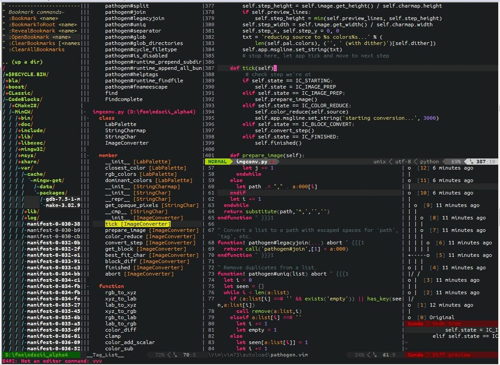

Dicas de VIM para Noobs
Sinta-se hackudo
Introdução
O que é VIM?
Se você veio até aqui e nem mesmo sabe o que é VIM, dê uma olhada aqui e, se quiser baixar um livro sobre o editor, confira aqui.
Por que usar VIM?
Pra se sentir Hackudo/Hackero/ Hackerzaum/Monstro das programação/ pra parecer Hacker de filme, etc.
Quem olhar você digitando texto nessa tela:

Vai te achar um monstro da hackeragem, o próprio Kevin Mitnick.
Eu decidi testar o VIM quando, em um Meetup, vi um cara escrever a seguinte linha de texto no Terminal:
sufocar cara_da_frente
Pressionar ESC e digitar :wq e o cara
que estava sentado na frente dele começou a ficar sem ar!
Isso foi incrível, cara.
Me mostrou os poderes do lado negro da força. Eu pensei: "Preciso de todo esse poder!"
Brincadeira
Muita gente diz que usar o VIM é mais produtivo do que outros editores como o Sublime (:heart:). Então eu resolvi testar e tirar minhas conclusões de com qual editor vou me dar melhor.
Para facilitar o workflow, criei esse book para deixar os comandos que mais utilizo, configurações legais, como instalar plugins, etc.